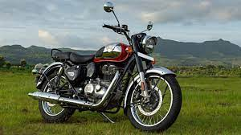
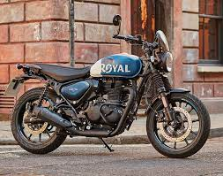

Royal Enfield was a brand name under which The Enfield Cycle Company Limited of Redditch, Worcestershire sold motorcycles, bicycles, lawnmowers and stationary engines which they had manufactured. Enfield Cycle Company also used the brand name "Enfield" without the "Royal". The first Royal Enfield motorcycle was built in 1901. The Enfield Cycle Company is responsible for the design and original production of the Royal Enfield Bullet, the longest-lived motorcycle design in history. Royal Enfield's spare parts operation was sold to Velocette in 1967, which benefitted from the arrangement for three years until their closure in early 1971. Enfield's remaining motorcycle business became part of Norton Villiers in 1967 with the business eventually closing in 1978.
|  | The Royal Enfield Interceptor 650 is a parallel twin retro-styled motorcycle introduced by Royal Enfield in 2018. It is the first modern twin cylinder motorcycle developed by the company. In 2017, the company revealed a new motorcycle which revived the classic Royal Enfield 1960s name, "Interceptor" |
| The Royal Enfield Interceptor 650 is a parallel twin retro-styled motorcycle introduced by Royal Enfield in 2018. It is the first modern twin cylinder motorcycle developed by the company. In 2017, the company revealed a new motorcycle which revived the classic Royal Enfield 1960s name, "Interceptor" |  |